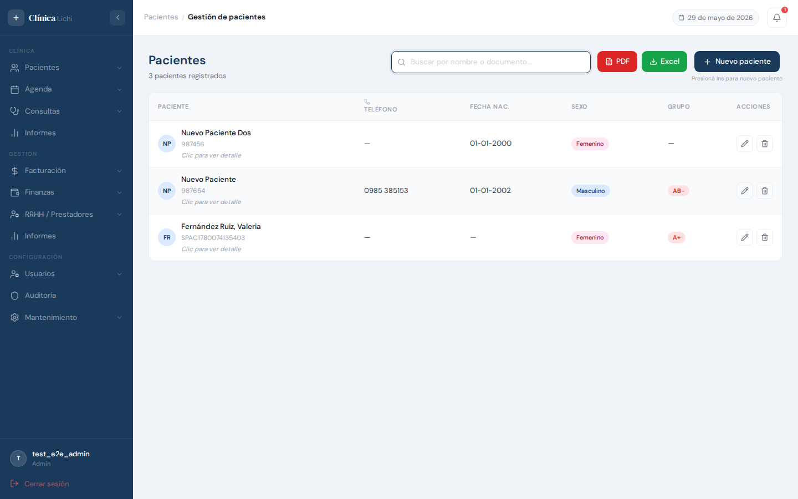
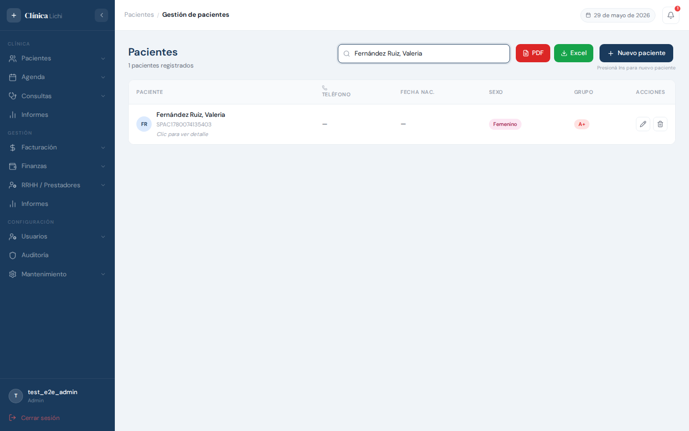
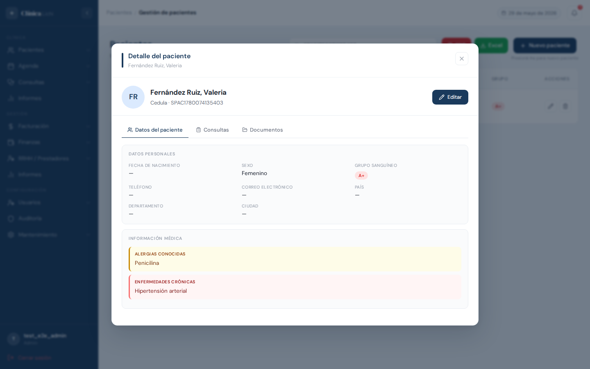
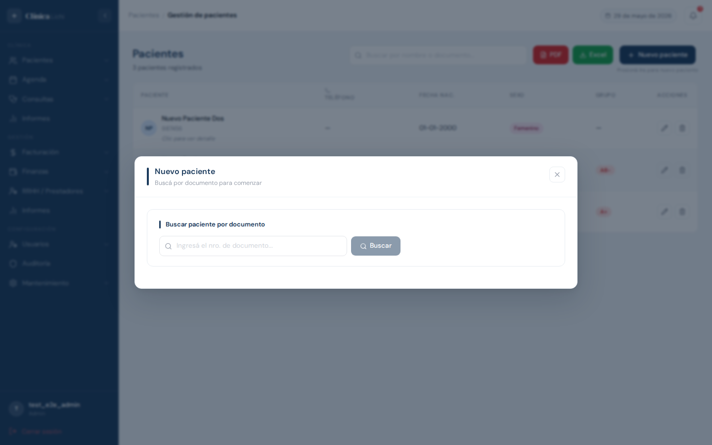
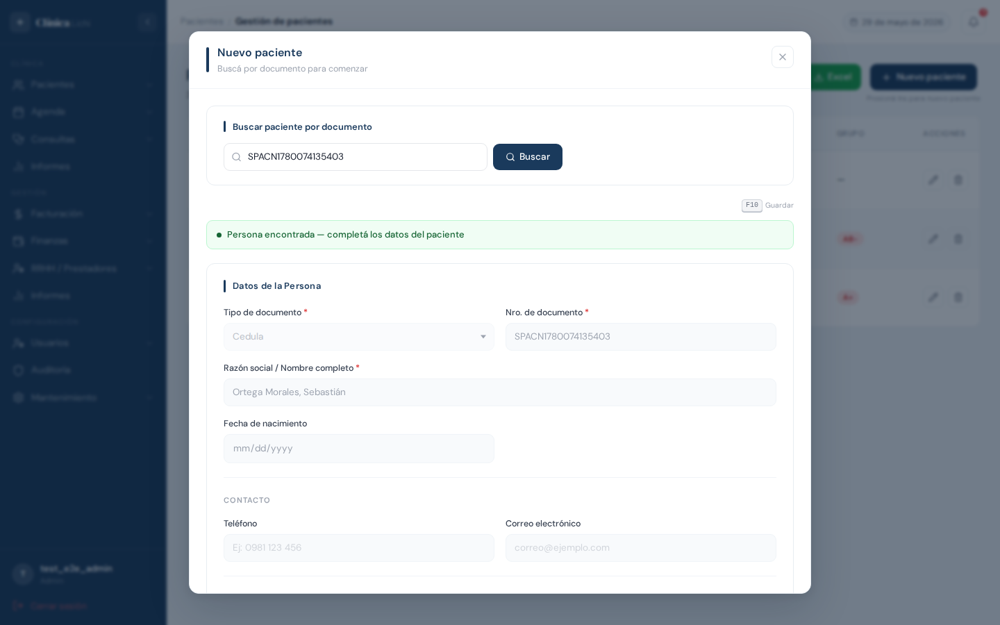
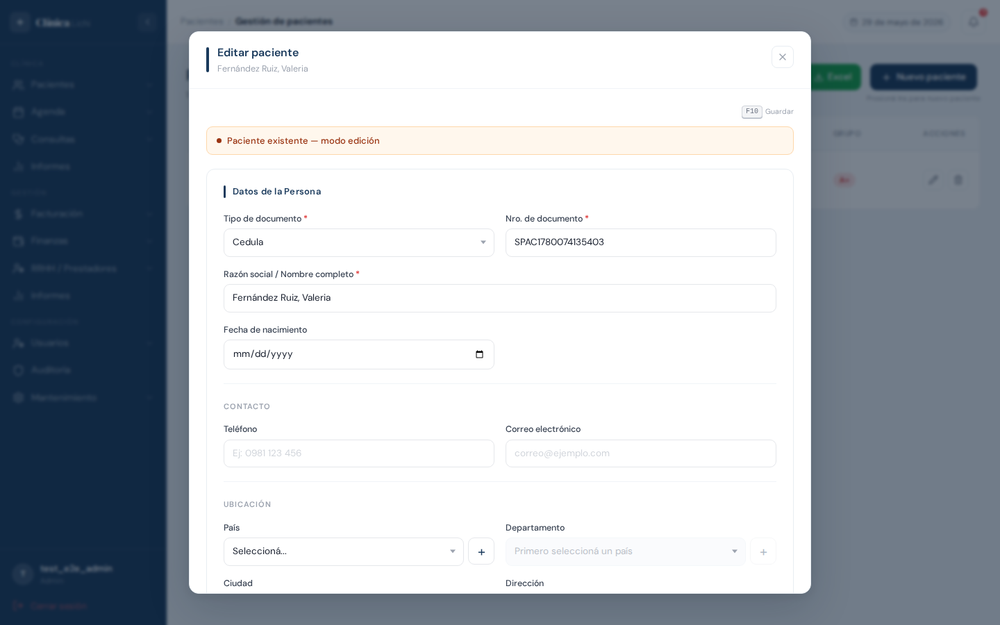
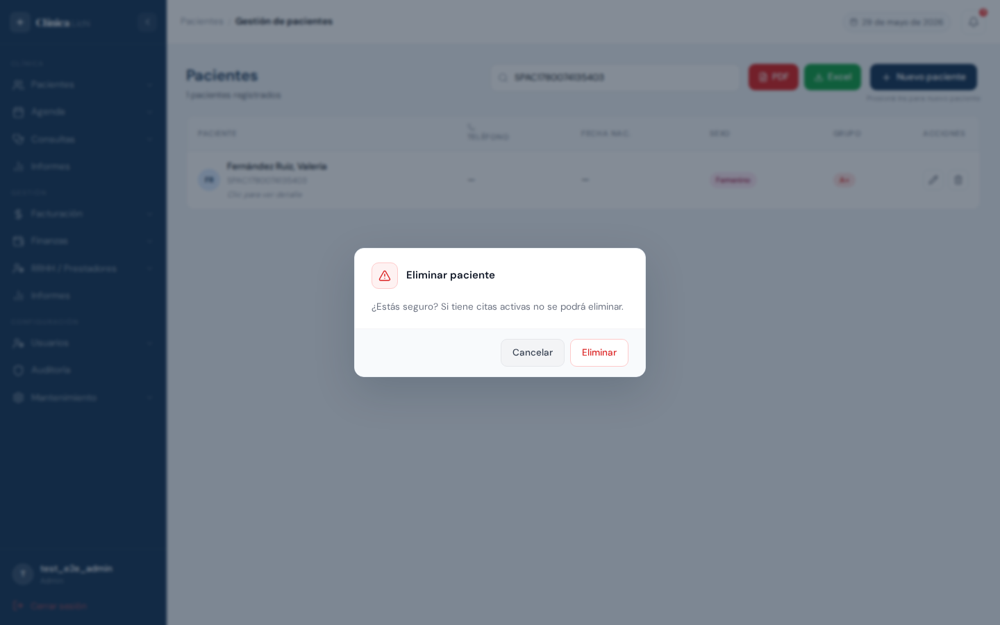
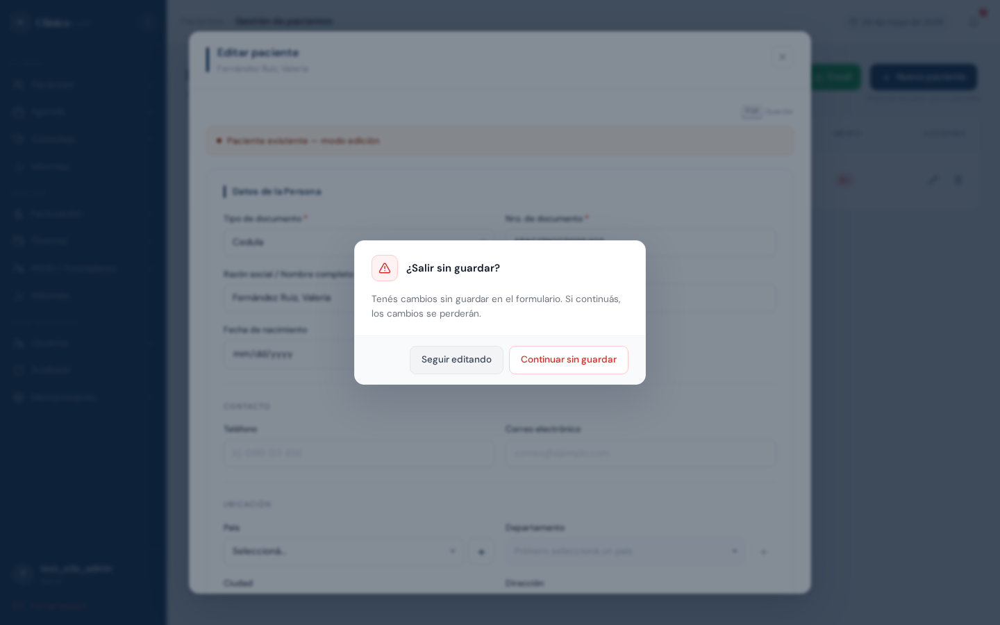

Descripción del módulo
El módulo Pacientes centraliza toda la información clínica y personal de las personas que se atienden en la clínica. Cada paciente está vinculado a una Persona del sistema y agrega datos clínicos propios: sexo, grupo sanguíneo, alergias conocidas, enfermedades crónicas, responsable asignado y observaciones.
Desde el detalle de un paciente también se puede consultar su historial de consultas médicas y los documentos digitalizados que tiene asociados.
| Acción | Administrador | Recepcionista |
|---|---|---|
| Ver listado y detalle | ✅ | ✅ |
| Registrar paciente | ✅ | ✅ |
| Editar paciente | ✅ | ✅ |
| Eliminar paciente | ✅ | 🚫 |
| Generar listado PDF / Excel | ✅ | ✅ |
Acceder al módulo
En el menú lateral izquierdo, hacé clic en Pacientes.
Pantalla principal — listado de pacientes
Al ingresar se muestra una tabla con todos los pacientes activos, ordenados por número de documento. En la parte superior encontrás la barra de búsqueda, los botones de reportes (PDF y Excel) y el botón para registrar un nuevo paciente.

Columnas de la tabla
| Columna | Descripción |
|---|---|
| Paciente | Avatar con iniciales, nombre completo y número de documento. Debajo aparece el texto "Clic para ver detalle" en filas no seleccionadas. |
| Teléfono | Teléfono de la persona vinculada al paciente. |
| Fecha nac. | Fecha de nacimiento y edad calculada automáticamente. |
| Sexo | Masculino (M), Femenino (F) u Otro (O). |
| Grupo | Grupo sanguíneo si fue completado. |
| Acciones |
Editar — abre el modal en modo edición
Eliminar — abre el diálogo de confirmación (solo Administrador)
|
Reportes — PDF y Excel
Los botones PDF y Excel en la barra superior generan un listado de pacientes con todos los registros activos. Los reportes incluyen nombre, documento, edad, sexo, teléfono y responsable asignado.
Buscar un paciente
El campo de búsqueda filtra la tabla en tiempo real por nombre completo o por número de documento del paciente.

| Comportamiento | Detalle |
|---|---|
| Por nombre | Filtra por el nombre completo de la persona (sin distinción de mayúsculas). |
| Por documento | Filtra por el número de documento. |
| Sin resultados | La tabla muestra el estado vacío. |
| Limpiar | Borrá el texto para ver todos los pacientes. |
Ver detalle de un paciente
Hacé clic en cualquier parte de una fila (excepto en los botones de acciones) para abrir el modal con la información completa del paciente en modo lectura.

El modal de detalle incluye:
- Avatar con iniciales, nombre completo y número de documento
- Datos personales: grupo sanguíneo, sexo, fecha de nacimiento, teléfono, correo, dirección
- Información médica: alergias conocidas (recuadro ámbar) y enfermedades crónicas (recuadro rojo)
- Responsable: nombre, documento y datos de contacto del responsable vinculado (si tiene)
- Historial de consultas: línea de tiempo con todas las consultas médicas del paciente
Para cerrar el modal hacé clic en la X del encabezado.
Registrar un nuevo paciente
Hacé clic en + Nuevo paciente (o presioná Insert con el modal cerrado). El registro siempre se vincula a una Persona existente o nueva: primero se busca la persona por documento y luego se completan los datos clínicos del paciente.

Flujo de registro
- Ingresá el número de documento en el campo de búsqueda y hacé clic en Buscar (o presioná Enter).
- El sistema busca la persona. Si ya existe sin paciente, pre-carga sus datos y muestra el formulario de paciente. Si no existe, muestra el formulario completo para crear la persona.
- Completá los campos del paciente. El único campo obligatorio es Sexo. El resto son opcionales.
- Hacé clic en Guardar o presioná F10.
- El modal se cierra y el paciente aparece en la tabla. Se muestra una notificación verde.

| Campo | Obligatorio | Descripción |
|---|---|---|
| Sexo | ✅ Sí | Masculino, Femenino u Otro. |
| Grupo sanguíneo | No | A+, A-, B+, B-, AB+, AB-, O+, O-, Desconocido. |
| Alergias conocidas | No | Texto libre. Se muestra con fondo ámbar en el detalle. |
| Enfermedades crónicas | No | Texto libre. Se muestra con fondo rojo en el detalle. |
| Responsable | No | Responsable o tutor del paciente (debe estar registrado en Paciente Responsable). |
| Parentesco | No | Relación con el responsable (ej: Madre, Padre, Tutor). |
| Observaciones | No | Notas adicionales del paciente. |
Editar un paciente
Podés editar desde el ícono de lápiz en la fila de la tabla o desde el botón Editar dentro del modal de detalle. En modo edición se muestran todos los campos del paciente y de la persona vinculada, listos para modificar.

- Pasá el cursor sobre la fila y hacé clic en ✏️, o abrí el detalle y hacé clic en Editar.
- El modal se abre en modo edición con todos los datos precargados.
- Modificá los campos que necesites.
- Hacé clic en Guardar o presioná F10.
- El modal se cierra y los cambios se reflejan en la tabla. Se muestra una notificación verde.
Eliminar un paciente
Eliminar un paciente lo quita del listado activo, pero no borra los datos personales ni el historial de consultas. Es un borrado lógico.
- Pasá el cursor sobre la fila y hacé clic en el ícono 🗑️.
- El sistema muestra un diálogo de confirmación con la advertencia sobre citas activas.
- Hacé clic en Eliminar para confirmar o en Cancelar para volver sin cambios.
- El paciente desaparece de la tabla. Se muestra una notificación verde.

Protección de cambios sin guardar
El sistema protege contra el cierre accidental del modal cuando hay cambios pendientes. Al intentar cerrar el modal con la X o navegar a otro módulo, aparece un diálogo de advertencia.

| Opción | Qué hace |
|---|---|
| Seguir editando | Cierra el diálogo y vuelve al formulario con los datos intactos. |
| Continuar sin guardar | Descarta los cambios y cierra el modal (o navega al destino solicitado). |
- Al cerrar el modal con la X en modo edición o después de buscar una persona
- Al hacer clic en otra fila de la tabla mientras el modal está abierto
- Al navegar a otro módulo desde el menú lateral
Mensajes de error frecuentes
| Mensaje / Situación | Causa | Qué hacer |
|---|---|---|
| "Esta persona ya tiene un paciente activo registrado" | La persona buscada ya tiene un paciente activo en el sistema. | El sistema te lleva automáticamente al modo Editar. Si es un error, buscá el paciente existente en la tabla. |
| "No se puede eliminar un paciente con citas activas" | El paciente tiene turnos en estado disponible, ocupado o realizado. | Ingresá al módulo Agenda, filtrá los turnos del paciente y cancelá o finalizá las citas activas. Luego volvé a intentar la eliminación. |
| El campo Sexo muestra "Campo requerido" al guardar | No se seleccionó ninguna opción de sexo. | Seleccioná una de las opciones: Masculino, Femenino u Otro. |
| El modal no cierra tras hacer clic en Guardar | Error de validación en algún campo (ej: teléfono inválido, correo inválido). | Revisá el mensaje de error en el formulario y corregí el campo indicado. |
Comportamientos esperados que pueden confundirse con errores
| Situación | Explicación |
|---|---|
| Al hacer clic en "Cancelar" el modal se cierra sin diálogo de confirmación | El botón Cancelar cierra el modal directamente. Para proteger cambios, usá la X del encabezado del modal — esa sí activa el diálogo de protección. |
| Busco crear un paciente pero el sistema abre en modo Editar | La persona ya tiene un paciente activo. El sistema lo detecta automáticamente para evitar duplicados. |
| No aparece el ícono 🗑️ en las filas | Tu rol es Recepcionista. Solo el Administrador puede eliminar pacientes. |
| Los campos "Alergias" y "Enfermedades crónicas" muestran "Sin registro" | Es el comportamiento esperado cuando no hay datos — estos campos siempre se muestran destacados para que el médico los note, incluso cuando están vacíos. |
| La tabla está vacía aunque haya pacientes | Hay un filtro de búsqueda activo. Borrá el texto del campo de búsqueda para ver todos los pacientes. |